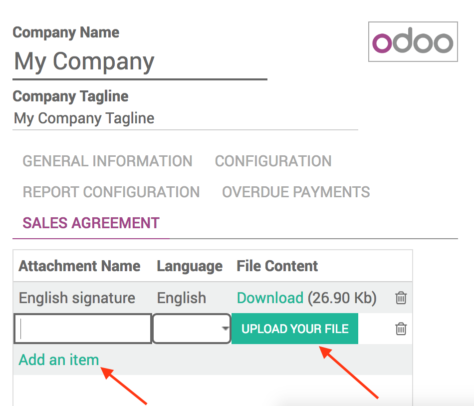
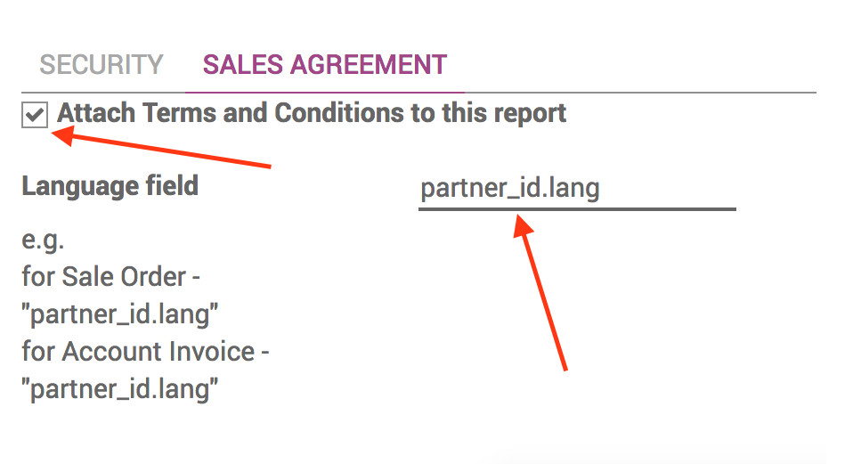

Documents - Terms and Conditions
Add Terms and Conditions on your documents!

This module allows you to add personalized signatures (e.g: Terms and Conditions) to your documents.
Different signatures can be set according to the type of report.
The signature changes accordingly with the language chosen.

User guide
How to upload the signature file wanted?

- Go to Settings/General Settings, then click on "Configure your company data".
- Go in "Sales Agreement" and click on "Edit".
- Click on "Add item" and upload a pdf file containing your signature. Do it for each of the desiderated languages.
How to choose to which kind of reports attach the signature?
- In developer mode, go to Settings/Technical, and in the drop down menu choose "Reports".
- Click on the kind of report you want your signature attached to.
- Go in "Sales Agreement" and click on "Edit".
- Check the "Attach terms and Conditions to this report" box (only visible if you have clicked on edit or if the box is already checked).
- Put the name of the language field of your kind of report.
